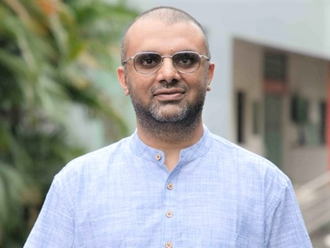
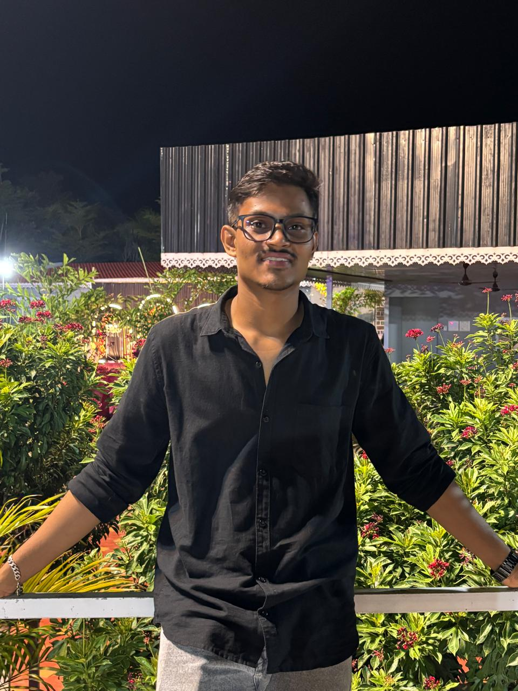
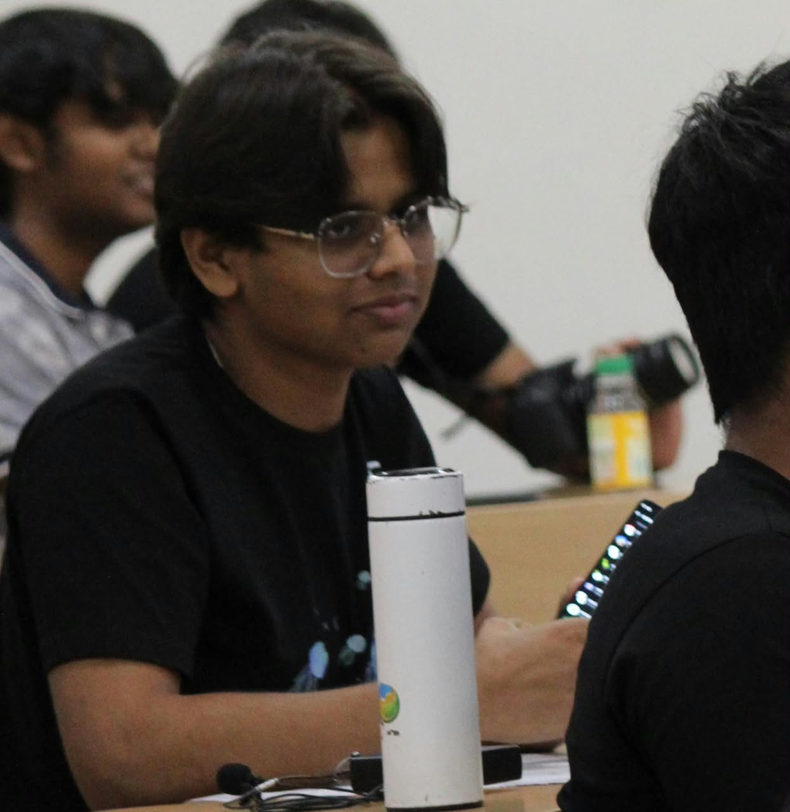

IISER Pune Linux Users Group
Building a home for innovators, coders and gamers — a community around technical curiosity 👾, competitive play 🎮 and shared passion 👨🏻💻
Aren't you using Linux yet?
We're a Linux Users Group at heart, but we've grown well beyond that — into a home for anyone curious about technology and anyone who loves to play.
A community for people who use software and tech — not just for research, but for curiosity, learning, and connection.
Uniting gamers across genres to transform gaming on campus from a solo pastime into a shared culture.
Faculty Coordinator
The mentor who backs IPLUG from the faculty side.

Previous Coordinators
The people who built IPLUG before us.

Current Coordinators
Who's running the show this year — come say hi.
Two Cores. One Community.
Tech vs Gaming

Events Conducted Last Year
A quick look at what we ran.
01. Python Sessions for Freshers
Helped people get acquainted to python
02. C++ Workshops
Introduced C++ with Prof. Kalpesh Kapoor
03. TeXnologia
a LaTeX Competition
04. Karavaan Game Nights
10+ competitions over 3 days.
05. Tinkering Thursdays
chill sessions over tech.
06. Functional Programming
Workshop on Lean/Functional Programming
07. Arduino Session
Arduino session for 3rd years who took Electronics-1 w/ lab.
08. IPLUG Gaming Showdown
BGMI + CODM + Valorant + Marvel Rivals + FIFA eFootball tournaments
09. Minecraft Server
Maintaining an Institute wide Minecraft server
This Year — Tech
Stay tuned for the following.
Plugged In
Teaching sessions exploring the different aspects of coding.
Arduino Workshops
Put your coding skills to use — build something fun and innovative.
Scientific Computing
Exposing the computational work across domains of science.
Coding Nights
A space for coders and non‑coders to talk and build algorithmic thinking.
Coder's Den
Competitive coding — maths, algorithms and puzzle‑solving.
Tex‑Nologia
Flex your type‑setting skills using LaTeX.
This Year — Gaming
Powered by our gaming community, CLUTCH — tournaments and chill sessions across genres, all year.
Inter IISER eSports Meet (IIeSM)
CLUTCH showed up and showed out — here's where we won.
- Shreedhar ReddyConc HClO4
- Ajay J MalikSabreclaws09
- Anirban Roy ChoudhuryZeus
- Monbikash GayanBrawktagon
- Tanishq Ved MilaniClovocaine
- Nitin DhamijaMr.NitinKing
- Anurag SinghAnurag@0405
- Aaditya Sx_AADITYA_x
- Abhimanyu Mishra-Mirage.
- Anbu SAgentAlphalite
Upcoming Events
Mark these — first two are right around the corner.
Plugged_In — Session 1
Exploring Coding in Science & a Python Intro.
Minecraft Event
By CLUTCH.
Perks of Showing Up to IPLUG Events
You get to use these words. Freely. In public. Nobody will look at you weird — they'll just nod and open a terminal.
Removes the symbol table & debug info from an executable.
Ancient protocol for looking up who's logged in and their info.
Creates an empty file, or just updates its timestamp.
Force-terminates a runaway child process.
Attaches a filesystem so the OS can actually use it.
Authorized probing of a system for security holes.
A raw pointer with no smart wrapper managing its lifetime.
Spawns a child process that's a copy of the parent.
A background process that runs without a controlling terminal.
Forces buffered data to be written out immediately.
Merch Design Competition
Got an eye for design? Submit your merch concept for a shot at seeing it on IPLUG apparel.
Stay in the loop.
Scan to follow along — updates, event drops, and community chatter.
See you at orientation — welcome to IPLUG. 👾